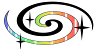
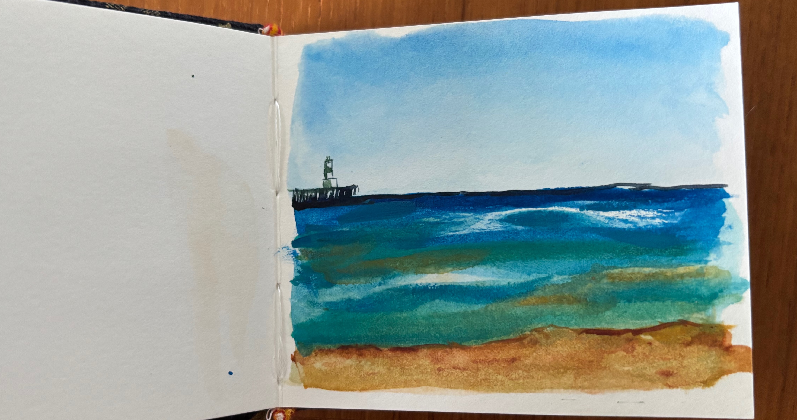

some fun little side quests I've gotten up to
My Little Galaxy Logo
There's something about logos that I find fascinating. They are clean, a bit abstract, but still give the impression of whatever it is they're trying to depict. In response to discovering that I would have to pay to have access to a "galaxy" icon for this website, I instead decided to try my hand at designing a little galaxy logo.
Birding?
Birding is a hobby I didn't think I would pick up for a while, but as I've been traveling I've found that identifying bird calls around me helps me connect with the area. All credit where credit is due: this hobby wouldn't be possible for me without the Merlin Birding App.
Pictured above is a Curl Crested Jay, which I saw in Rio De Janeiro

Watercolor
Every once in a while, I paint! This is one I did on a beach on Lake Michigan this summer.